TBM 관리자 사용 설명서
영업·마케팅·운영·총무·관리직 등 비개발 직군을 위한 TBM(Tool Box Meeting) 관리자 웹 사용 안내서입니다.
0. 핵심 용어 정리
꼭 알아야 할 용어/개념
💡 팁 업무 흐름 한 줄 요약: 양식 생성 → 전송 등록(예약) → 정해진 시간에 근로자 앱으로 발송 → 참여 현황 확인 → 미확인자 재발송
1. 시작하기
1.1 로그인 전체
브라우저로 관리자 웹에 접속해 계정으로 로그인합니다.
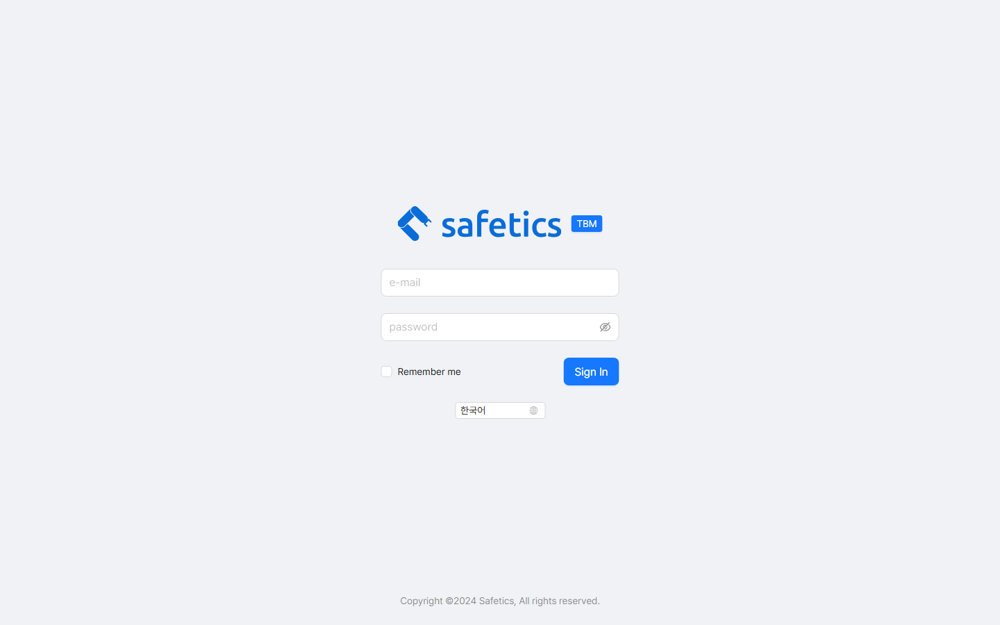
📷 스크린샷 준비 중 — 로그인 화면
로그인 화면
관리자 웹 주소로 접속합니다. (사내 공지된 URL)
이메일 과 비밀번호 (4자 이상)를 입력합니다. 👁 아이콘으로 비밀번호를 확인할 수 있습니다.필요하면 화면의 언어 선택에서 한국어 / English 를 바꿉니다.
다음에 자동으로 로그인하려면 Remember me 를 체크합니다.
Sign In 을 누릅니다.
로그인이 안 될 때
1.2 화면 구성 익히기 전체
상단 헤더 · 왼쪽 사이드바 · 가운데 콘텐츠 3영역으로 구성됩니다.
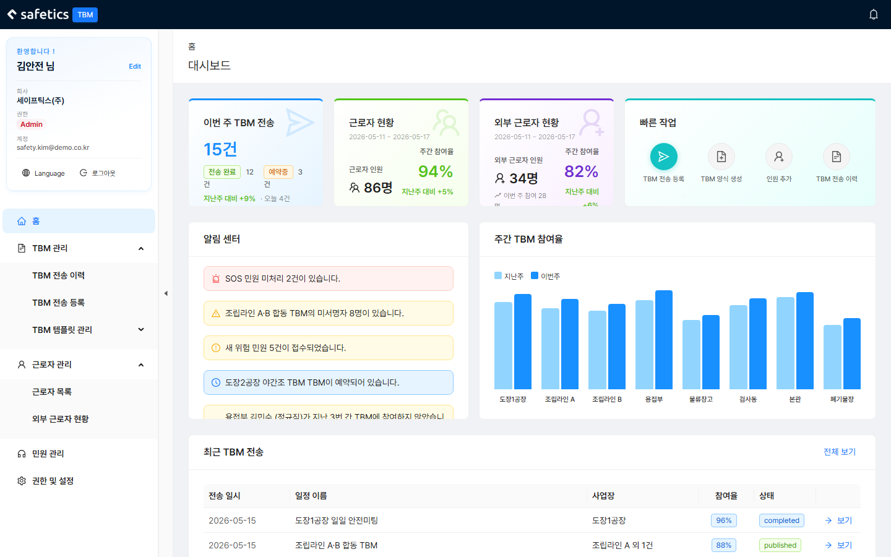
📷 스크린샷 준비 중 — 홈(대시보드)
홈(대시보드) — 로그인 직후 첫 화면 상단 헤더
🔔 알림 벨 : 30초마다 자동 갱신. 🚨 SOS / ⚠️ 작업중지 / 신규 민원 / 새 답글 알림이 표시됩니다. 개별 삭제(X) 또는 모두 지우기 가능.화면이 좁으면(태블릿·모바일) ☰ 버튼으로 메뉴를 엽니다.
왼쪽 사이드바
메뉴: 홈 / TBM 관리 / 근로자 관리 / 민원 관리 / 권한 및 설정 — 내 권한에 따라 보이는 메뉴가 다릅니다(1.3 참고 ).
하단 사용자 카드: 이름·회사·권한 배지·계정. Language 로 언어 전환, 로그아웃 버튼.
사이드바는 접기/펼치기 토글로 좁힐 수 있습니다.
홈(대시보드)에서 보는 것
지표 카드 : 이번 주 TBM 전송 / 근로자 현황 / 외부 근로자 현황 / 빠른 작업빠른 작업 : TBM 전송 등록 · TBM 양식 생성 · 인원 추가 · TBM 전송 이력 — 클릭 한 번으로 이동알림 센터 : SOS·미서명·미참여·예약 알림. 클릭하면 관련 화면으로 이동주간 TBM 참여율 : 현장별 지난주 vs 이번주 그래프최근 TBM : 최근 발송 건 목록. 보기 로 상세, 전체 보기 로 이력 페이지 이동
1.3 내 권한 확인하기 전체
사이드바 하단 사용자 카드의 배지(Admin/Manager/Worker)로 내 권한을 확인합니다. 권한에 따라 보이는 메뉴가 다릅니다.
⚠️ 주의 "메뉴가 안 보여요" 는 대부분 권한 문제입니다. Manager의 세부 권한(TBM 관리, 근로자 초대 등)은 Admin이
역할 및 권한 설정 에서 조정합니다. Worker 계정은 관리자 웹에 접속할 수 없습니다(모바일 App만 이용 가능).
2. 주요 기능 | 양식 생성과 TBM 발송·확인
2.1 양식(템플릿) 만들기 ★필수 Manager 이상
TBM 발송에 쓸 재사용 양식을 만듭니다. 양식이 하나도 없으면 TBM 전송 일정을 등록할 수 없으므로, 가장 먼저 해야 하는 필수 작업입니다.
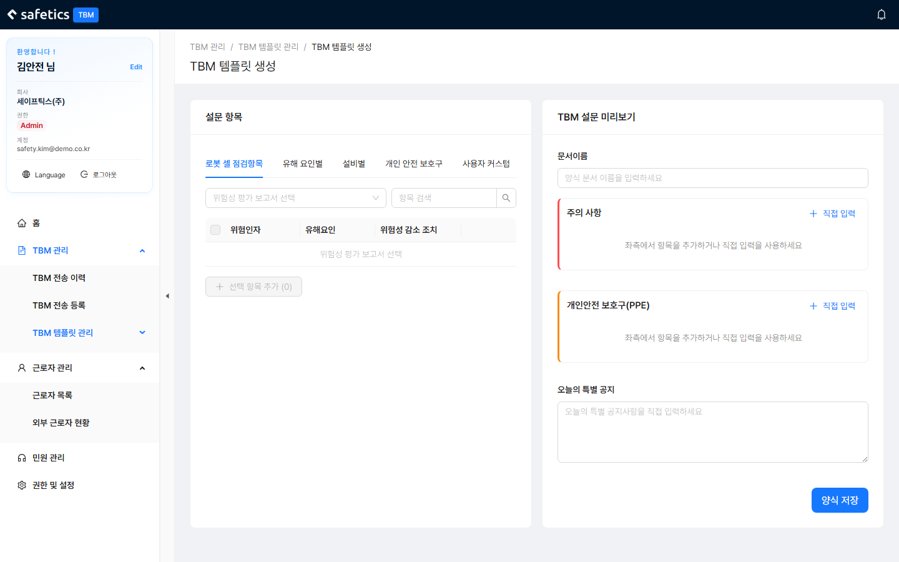
📷 스크린샷 준비 중 — 양식 생성
양식 생성 — 왼쪽: 설문 항목 데이터 / 오른쪽: 양식 미리보기
왼쪽에는 설문 항목 데이터, 오른쪽에는 만들어지는 양식 미리보기가 표시됩니다.
항목 데이터는 출처별로 5개 탭이 있습니다:
탭을 고르고, 서브 카테고리 필터·검색으로 원하는 항목을 찾습니다.
항목의 버튼으로 "주의사항" 또는 "PPE" 섹션에 추가합니다. 여러 개 체크 후 선택 항목 추가 로 일괄 추가도 됩니다.
목록에 없는 내용은 직접 입력 으로 빈 항목을 추가해 작성합니다.
잘못 넣은 항목은 휴지통으로 삭제합니다.
오른쪽 미리보기에서 문서 이름 과 특별 공지 를 입력합니다.
양식 저장 을 누릅니다.
💡 팁 양식에 추가된 항목에는 출처 태그([위험성 평가] [유해 요인별] [설비별] [개인 안전 보호구] [사용자 입력])가 붙어 어디서 온 항목인지 구분됩니다.
2.2 TBM 전송 등록하기 ★ Manager 이상
양식을 골라 근로자들에게 TBM을 발송(예약)합니다. 가장 자주 쓰는 핵심 기능입니다.
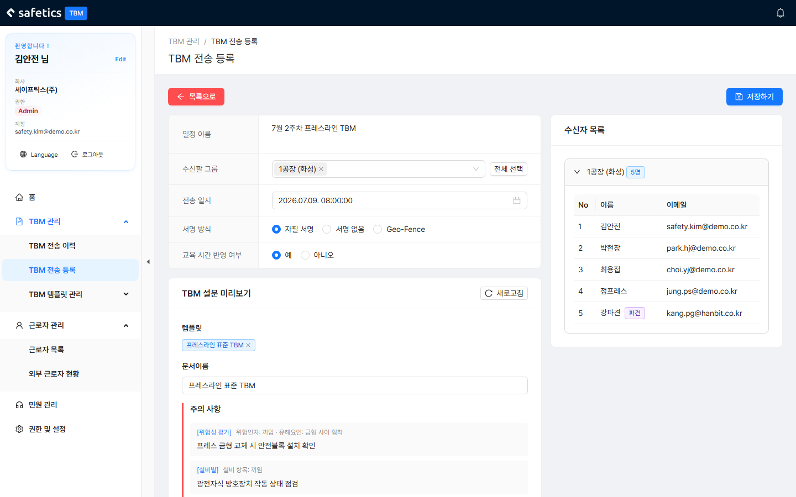
📷 스크린샷 준비 중 — TBM 전송 등록
TBM 전송 등록 — 왼쪽: 설정·미리보기 / 오른쪽: 수신자 목록
일정 이름 을 입력합니다. (예: "3월 2주차 프레스라인 TBM")수신할 그룹 (사업장)을 선택합니다. 여러 개 선택 가능, 전체 선택 버튼도 있습니다. 선택하면 오른쪽에 수신자 목록이 사업장별로 표시됩니다.전송 일시 를 선택합니다. 과거 시간은 선택할 수 없고, 기본값은 다음날 설정 시각입니다.서명 방식 을 선택합니다: 자필 서명 / 서명 없음 / Geo-Fence (공장 GPS 범위 안에서만 제출 가능).교육 시간 반영 여부 (예/아니오)를 선택합니다.TBM 양식(템플릿) 을 선택합니다. 아래에 주의 사항·PPE·특별 공지 미리보기가 표시됩니다. 저장하기 를 누릅니다. "TBM이 저장되었습니다." 메시지와 함께 전송 이력으로 이동합니다.
💡 팁 서명 방식·교육 시간·전송 시각의
기본값 은 Admin이
기본 TBM 설정 에서 바꿀 수 있습니다.
⚠️ 주의 양식이 하나도 없으면 발송할 수 없습니다. 먼저
2.1 양식(템플릿) 만들기 를 진행하세요 (화면의
양식 생성 버튼으로도 이동 가능). 오른쪽 수신자 목록에서 보라색
"파견" 배지 가 붙은 인원은 파견 온 근로자입니다.
2.3 발송 예약 확인·수정하기 Manager 이상
아직 발송되지 않은 "예약중" 건의 일시·수신자·양식을 바꾸거나 삭제합니다.
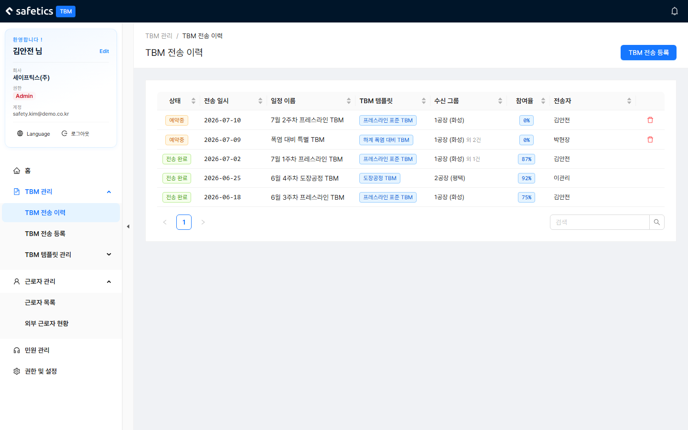
📷 스크린샷 준비 중 — TBM 전송 이력
TBM 전송 이력 - 상태 열에서 "예약중"/"전송 완료" 구분
TBM 전송 이력 에서 상태가 "예약중" 인 행을 찾습니다. 일정명·템플릿명·사업장명으로 검색할 수 있습니다.행을 클릭해 상세 화면으로 들어갑니다.
필요한 항목을 수정합니다:
전송 일시 변경 - 달력에서 선택 (즉시 반영)수신 그룹 추가/삭제양식 교체 또는 수정 으로 양식 편집 화면 이동수신자 추가 - 검색해서 여러 명 한 번에 추가, 휴지통으로 개별 삭제
수정을 마치면 저장 . 발송 자체를 취소하려면 삭제 .
🚫 전송 완료된 TBM은 수정·삭제할 수 없습니다.
2.4 참여 현황 확인하기 Manager 이상
발송된 TBM에 누가 참여했고 누가 안 했는지 확인합니다.
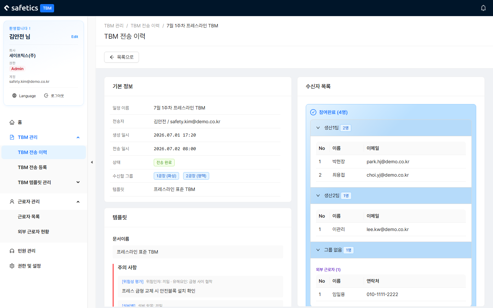
📷 스크린샷 준비 중 — 전송 이력 상세
전송 완료 건 상세 — 참여 완료/미참여 구분
TBM 전송 이력 목록에서 참여율 열로 전체 현황을 훑어봅니다. 열 제목을 눌러 정렬할 수 있습니다.상태가 "전송 완료" 인 행을 클릭해 상세로 들어갑니다.
참여 완료 / 미참여 목록을 확인합니다. 수신자는 소속 사업장별로 접었다 펼 수 있고, 정규 근로자와 외부 근로자 (보라색)가 구분 표시됩니다.
💡 팁 홈 대시보드의 주간 TBM 참여율 그래프로 현장별 추세(지난주 vs 이번주)를 한눈에 볼 수 있습니다.
2.5 미확인자에게 다시 알리기 (Push 재발송) Manager 이상
TBM을 아직 확인하지 않은 인원에게만 Push 알림을 다시 보냅니다.
전송 완료 건의 상세 화면으로 들어갑니다.
Push 알림 재발송 버튼을 누릅니다."미확인자 N명에게 Push 알림을 재발송했습니다." 메시지를 확인합니다.
⚠️ 주의 재발송 버튼은
발송 후 일정 시간(기본 설정값, 예: 2시간)이 지나야 활성화 됩니다.
버튼이 비활성화라면 아직 대기 시간이 안 지난 것 입니다.
기준 시간은 Admin이
기본 TBM 설정 의 "미확인자 재발송 기준 시간"(1/2/4/8시간)에서 바꿉니다.
3. 부가 기능 | 양식과 인원 관리
3.1 양식 항목 대량 등록 (Excel) Manager 이상
"사용자 커스텀" 탭에 점검 항목 수십 개를 한 번에 등록합니다.
양식 생성 화면에서 사용자 커스텀 탭으로 이동합니다.
양식 다운로드 로 CSV 서식 파일을 내려받습니다.Excel에서 열어 점검 항목 / 위험인자 / 유해요인 열을 채웁니다.
Excel 업로드 로 작성한 파일(CSV/xlsx)을 올립니다.잘못 올라간 항목은 체크 후 선택 삭제 로 정리합니다.
💡 팁 소량의 건을 추가할 때는 업로드 대신 직접 입력 모달(점검 항목/위험인자/유해요인 입력)이 빠릅니다.
3.2 양식 수정·복원·삭제 Manager 이상
만들어 둔 양식을 찾아 내용을 고치거나 삭제합니다.
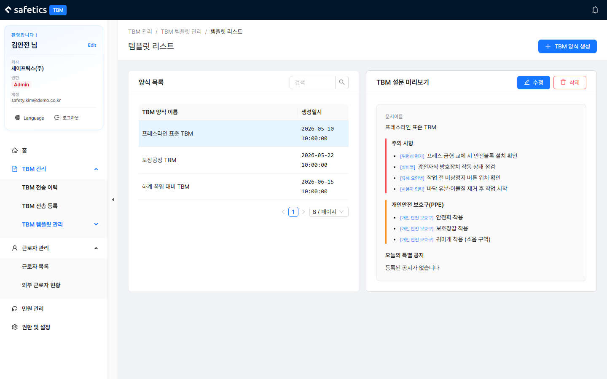
📷 스크린샷 준비 중 — 템플릿 리스트
템플릿 리스트 — 왼쪽: 목록 / 오른쪽: 미리보기
템플릿 리스트 에서 양식 이름으로 검색하고, 행을 클릭하면 오른쪽에 미리보기(문서 이름·주의 사항·PPE·특별 공지)가 표시됩니다.내용을 고치려면 수정 — 양식 생성과 같은 화면이 편집 모드로 열립니다.
편집 중 원본으로 되돌리려면 원래대로 (원본 복구), 편집을 그만두려면 취소 .
양식을 지우려면 삭제 → "이 양식을 삭제하시겠습니까?" 확인.
⚠️ 주의 수정 화면 상단에 경고 배너가 표시됩니다. 이미 발송된 TBM에는 영향이 없지만, 이 양식을 쓰는 "예약중" 건이 있다면 발송 내용이 달라질 수 있으니 수정 전에 확인하세요.
3.3 근로자(정규) 관리 Manager 이상
조직도에서 인원을 찾고, 공장에 인원을 추가/제거하고, 권한을 바꿉니다.
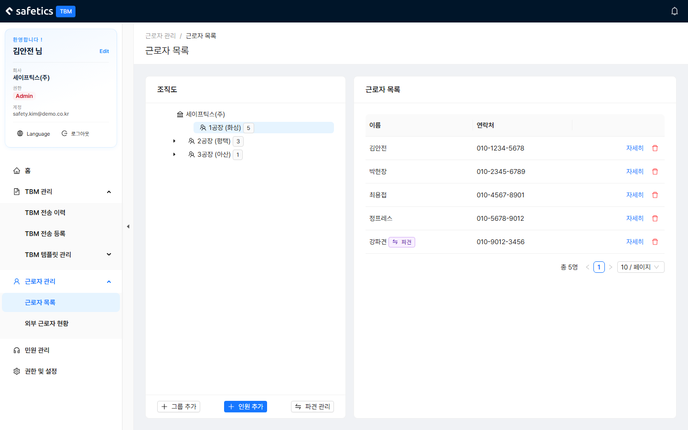
📷 스크린샷 준비 중 — 근로자 목록
근로자 목록 — 왼쪽: 조직도 트리 / 오른쪽: 인원 테이블·상세 인원 찾기
왼쪽 조직도 트리: 회사 → 공장 → 인원 . 아직 공장에 배정되지 않은 인원은 "그룹 없음" 에 모여 있습니다.
인원을 클릭하면 상세(이름/이메일/연락처/소속 공장/직급/권한/등록일)와 TBM 참여 내역 이 표시됩니다.
공장에 인원 추가 / 제거
트리에서 공장 을 선택합니다. (공장 선택 시에만 인원 추가 ·파견 관리 버튼이 활성화됩니다)
인원 추가 → 모달에서 검색 → 여러 명 체크 → 추가.제거는 목록에서 휴지통 아이콘 → 확인. (그룹에서만 빠지고 계정은 유지됩니다)
권한(역할) 변경
인원 상세에서 수정 을 누르고 역할을 선택합니다.
본인보다 낮은 등급만 변경할 수 있습니다. (Admin > Manager > Worker)
⚠️ 주의 그룹(사업장) 추가는 Admin 전용 입니다. Manager가
그룹 추가 를 누르면 "그룹(사업장) 추가는 Admin 권한만 가능합니다." 안내가 뜹니다. Admin은
권한 및 설정 > 조직/사업장 관리 에서 추가합니다.
3.4 외부 근로자(일용직) 관리 Manager 이상
일용직의 근무·TBM 참여 현황을 확인하고, 공장별 인증번호를 관리합니다.
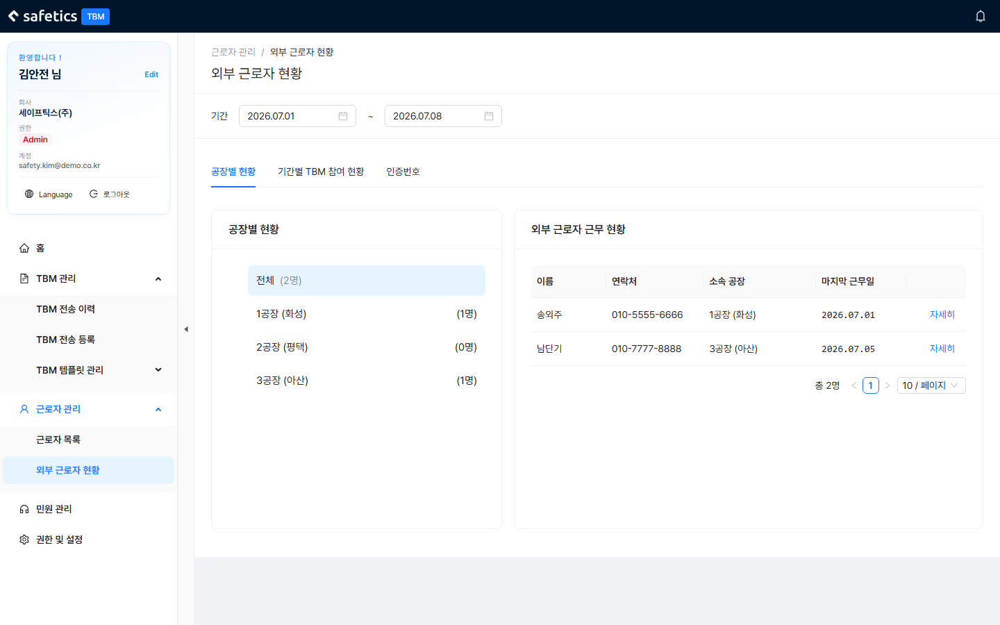
📷 스크린샷 준비 중 — 외부 근로자 현황
외부 근로자 현황 — 상단 기간 필터 + 탭 3개 상단에서 기간(시작일~종료일) 을 먼저 고르고, 탭 3개를 사용합니다:
① 공장별 현황
왼쪽 공장 트리(인원수 표시) → 외부 근로자 근무 현황(이름·연락처·소속·마지막 근무일) → 상세 카드(TBM 참여 내역 포함)
인증 정보 초기화 : 해당 근로자의 생체인증/PIN을 초기화합니다. 폰을 바꿨거나 인증이 안 될 때 사용.
② 기간별 TBM 참여 현황
날짜 × 공장별로 TBM에 참여한 일용직 수를 집계한 표. 보고용으로 유용합니다. ③ 인증번호
공장별 인증번호를 확인합니다. (없으면 자동 발행)
번호가 노출됐다면 개별 갱신 또는 일괄 갱신 으로 재발급합니다.
일괄 출력 으로 공장명+인증번호를 A4 PDF로 저장해 현장에 게시합니다.
💡 개념 인증번호 는 외부 근로자가 모바일 앱에서 특정 공장의 TBM에 참여하기 위해 입력하는 공장별 코드입니다. 갱신하면 이전 번호는 무효가 됩니다.
3.5 파견 관리 Manager 이상
다른 조직·공장 소속 근로자를 우리 사업장 TBM 대상으로 초대합니다.
근로자 목록 에서 공장을 선택하고 파견 관리 버튼을 누릅니다.파견 초대 탭에서 상대의 이메일 또는 전화번호 로 검색합니다. (개인정보 보호를 위해 검색 결과는 마스킹되어 표시됩니다)🚩주의 : SafetyDesigner 회원으로 가입된 계정 정보를 검색해주세요. 시작일 (기본: 수락 즉시) / 종료일 (기본: 무기한) / 공종·작업 유형 / 메모를 입력합니다.파견 초대 발송 을 누릅니다. 상대가 모바일 앱에서 수락하면 파견이 시작됩니다.파견 현황 탭에서 상태를 관리합니다:
상태: 대기중 / 수락됨 / 거절됨 / 취소됨 / 만료됨
대기중 → 초대 취소 가능
수락됨 → 파견 종료 가능
⚠️ 개념 주의 파견 ≠ 외부 근로자. 파견은 "다른 조직의 정규 계정 을 우리 TBM 대상에 포함"하는 것이고, 외부 근로자는 "계정 없이 인증번호로 참여하는 일용직"입니다. 파견 인원은 근로자 목록·수신자 목록에서 보라색 "파견" 배지 로 표시됩니다. 이미 파견 중인 사람은 중복 초대할 수 없습니다.
4. 이슈 트래킹 | 민원·SOS 대응
4.1 SOS·긴급 상황 대응 ★ 전체
현장에서 올라온 SOS·작업중지 신고를 가장 먼저 확인하고 조치합니다.
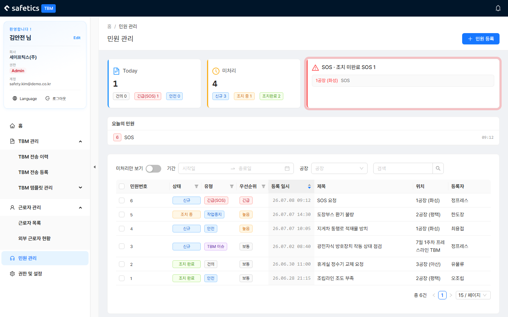
📷 스크린샷 준비 중 — 민원 관리
민원 관리 — 상단 현황 카드(오늘/미처리/SOS) + 목록
SOS가 접수되면 🔔 알림 벨 (🚨 표시)과 민원 관리 상단 SOS 카드 (깜빡임)로 알 수 있습니다.
SOS 카드 또는 알림을 클릭해 상세를 엽니다.
내용·위치·신고자를 확인하고 현장 대응을 진행합니다.
대응 내용을 조치 이력(댓글) 으로 기록합니다. 댓글을 등록하면 상태가 자동으로 "조치 중" 이 됩니다.
상황 종료 후 조치 완료 상태로 변경 을 누릅니다.
🚨 중요 SOS 민원은
Admin도 삭제할 수 없습니다 (기록 보존).
긴급 알림(SOS·작업중지) 수신 대상은
역할 및 권한 설정 의 "긴급 알림 수신" 항목으로 관리합니다.
공장별 SOS 담당자·작업중지 관리자는
공장 설정 에서 지정합니다.
4.2 민원 조회·필터 전체
민원을 유형·상태·기간·공장별로 걸러서 봅니다.
민원 유형 5가지
상태 흐름
신규 → 조치 중 → 조치 완료 순서로 진행됩니다.
거르는 방법
미처리만 보기 토글 — 조치 완료 건 숨기기기간(날짜 범위)·공장 필터
검색 — 제목·내용·등록자·번호
표 컬럼 필터 — 상태 / 유형 / 우선순위(긴급·높음·보통)
💡 팁 상단 카드 3장이 요약판입니다: 오늘 현황 (건의/SOS/안전 건수) · 미처리 (신규/조치중/조치완료) · SOS (미완료 목록).
4.3 민원 처리하기 전체
민원 상태를 바꾸고 조치 내용을 기록합니다.
목록에서 민원 행을 클릭해 상세 모달 을 엽니다.
조치 이력 추가 에 대응 내용을 적고 등록합니다. (신규 건이면 자동으로 "조치 중" 전환)완료되면 조치 완료 상태로 변경 . 잘못 완료했다면 조치 중으로 원복 .
여러 건을 한 번에 끝내려면 목록에서 체크 후 일괄 조치 완료 .
권한별 차이
민원 등록 버튼(제목/내용/유형/공장/우선순위 입력)은 Admin 에게만 표시됩니다.삭제 : Admin은 SOS를 제외한 민원 삭제 가능. 일반 사용자는 본인이 작성한 건만 삭제 가능.댓글은 본인이 쓴 것만 수정·삭제할 수 있습니다.
5. 관리자(Admin) 전용 — 시스템 설정
메뉴는 Admin 에게만 표시됩니다. 탭 4개로 구성됩니다.
5.1 역할 및 권한 설정 Admin
Manager·Worker가 무엇을 할 수 있는지 체크박스 표로 조정합니다.
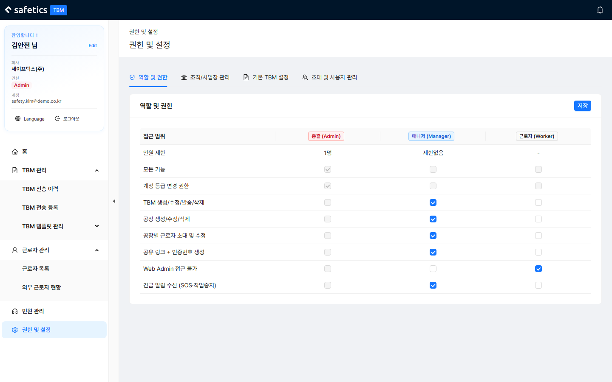
📷 스크린샷 준비 중 — 권한 및 설정
권한 및 설정 — 역할 및 권한 탭
권한 및 설정 > 역할 및 권한 탭을 엽니다.Manager / Worker 열의 체크박스를 조정합니다. (Admin 행은 항상 전권 — 수정 불가. Admin은 조직당 1명)
저장합니다. 대상자의 메뉴·버튼 노출이 즉시 달라집니다.
5.2 공장(사업장) 관리 Admin
공장을 추가·수정·삭제하고, 담당자와 GPS 범위를 지정합니다.
권한 및 설정 > 조직/사업장 관리 탭을 엽니다. 공장 목록(공장명/주소/SOS 담당자/작업중지 관리자/관리자/GPS 범위)이 표시됩니다.공장 추가 또는 기존 공장의 수정 버튼을 누릅니다.모달에서 입력합니다:
이름 · 주소 SOS 담당자 / 작업중지 관리자 — 긴급 상황 시 우선 통보 대상관리자 지정 — 지정된 인원은 자동으로 Manager 역할이 부여되고, 해제하면 Worker로 돌아갑니다지도에서 GPS 핀 찍기 + 반경(m) — Geo-Fence 서명 판정 기준
저장합니다.
⚠️ 주의 공장은 최대 10개 까지 등록됩니다. GPS 핀·반경이 실제 현장과 다르면 Geo-Fence 서명이 계속 실패하니 정확히 찍으세요.
5.3 기본 TBM 설정 Admin
TBM 전송 등록 화면에 기본값으로 채워질 값들과 알림 정책을 정합니다.
💡 팁 현장에서 "매번 같은 값을 다시 고른다"는 불만이 나오면 이 탭의 기본값을 바꾸는 것이 정답입니다.
5.4 초대 및 사용자 관리 Admin
초대 관련 정책을 설정합니다.
매니저(Manager)도 초대 가능 체크 — Manager에게 근로자 초대 권한을 열어줄지 결정합니다.
부록
A. 자주 묻는 질문 (FAQ)
Q. 전송 완료된 TBM을 수정하고 싶어요.
A. 불가능합니다. 전송 완료 건은 읽기 전용입니다. 내용을 바꾸려면 새 TBM을 등록해 다시 발송하세요. 발송 전이라면 상태가 "예약중"일 때 수정하세요.
Q. "Push 알림 재발송" 버튼이 비활성화예요.
A. 발송 후 기준 시간(기본 설정값)이 지나야 활성화됩니다. 기준 시간은 Admin이 기본 TBM 설정에서 1/2/4/8시간 중 선택합니다.
Q. 사이드바에 메뉴가 안 보여요.
A. 권한 문제입니다. "TBM 관리"는 TBM 권한, "근로자 관리"는 초대 권한이 있어야 보입니다. "권한 및 설정"은 Admin 전용입니다. Admin에게 권한 조정을 요청하세요.
Q. 외부 근로자가 앱에서 인증이 안 된대요.
A. ① 인증번호가 갱신되어 이전 번호가 무효인지 확인 → 최신 번호 전달. ② 기기 변경 등으로 생체인증/PIN 문제라면 외부 근로자 현황에서 해당 인원의 인증 정보 초기화 를 실행하세요.
Q. 파견 초대를 보냈는데 상대에게 안 떠요.
A. 파견 현황 탭에서 상태를 확인하세요. "대기중"이면 상대가 아직 수락 전입니다(앱 프로필 화면 또는 로그인 시 모달에서 수락). 이메일/전화번호를 다시 확인하고, 필요하면 취소 후 재초대하세요.
Q. 공장을 더 추가하고 싶은데 안 돼요.
A. 공장은 최대 10개까지 등록할 수 있습니다. 한도에 도달했다면 사용하지 않는 공장을 정리하세요. 공장 추가는 Admin 전용입니다.
Q. Geo-Fence 서명이 인정되지 않아요.
A. 근로자의 디바이스 위치가 공장 GPS 범위(핀 위치 + 반경) 밖에 있다고 인식되면 서명이 인정되지 않습니다. 공장 설정에서 GPS 핀 위치와 반경(m)이 실제 현장과 맞는지 확인하세요. 혹은 근로자의 휴대폰에 위치정보 변조 기능(혹은 앱)이 있는지 확인해주세요.
B. 권한별 기능 매트릭스
Worker는 관리자 웹에 접속할 수 없습니다(모바일 앱 전용). Manager의 * 표시 권한은 Admin이 역할 및 권한 설정 에서 부여/회수합니다.
C. 용어집
TBM (Tool Box Meeting) 작업 전 실시하는 단시간 안전 미팅. 이 시스템에서는 모바일 앱으로 설문·서명을 진행합니다.
양식 / 템플릿 주의사항·PPE·특별 공지를 묶은 재사용 서식. 화면에 따라 두 단어가 혼용되지만 같은 뜻입니다.
세션 / TBM 전송 양식을 특정 일시·그룹에 실제 발송한 1회 건.
PPE (개인 안전 보호구) 안전모·안전화·보안경 등 개인 보호 장비.
위험성 평가(RA) Risk Assessment. 별도 시스템에서 작성된 위험성 평가 보고서로, 양식 생성 시 점검 항목의 출처로 사용됩니다.
Geo-Fence (지오펜스) 공장 GPS 핀 + 반경으로 만든 가상 울타리. 이 범위 안에서만 서명이 인정되는 서명 방식.
파견 다른 조직·공장 소속 인원을 우리 사업장 TBM 대상으로 초대하는 것. 보라색 "파견" 배지로 표시.
외부 근로자 (일용직) 정식 계정 없이 공장별 인증번호로 TBM에 참여하는 근로자.
인증번호 외부 근로자가 앱에서 공장 TBM에 참여할 때 입력하는 공장별 코드. 갱신·일괄 출력 가능.
그룹 / 사업장 / 공장 조직 단위. 화면에 따라 "그룹", "사업장", "공장"으로 표시되며 대체로 같은 단위를 가리킵니다.
D. 오류 메시지 사전